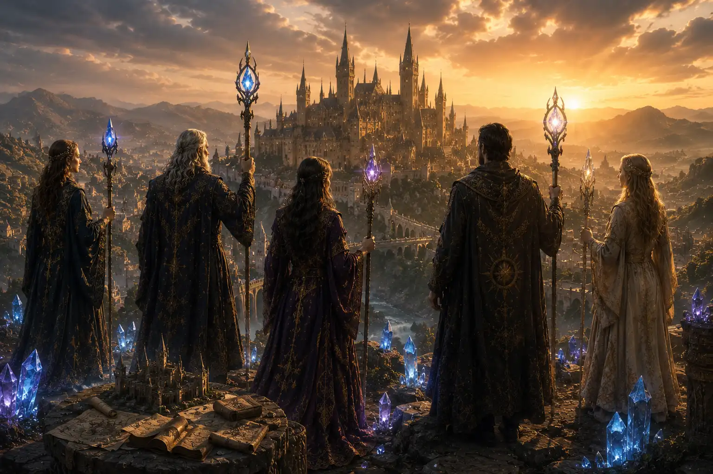
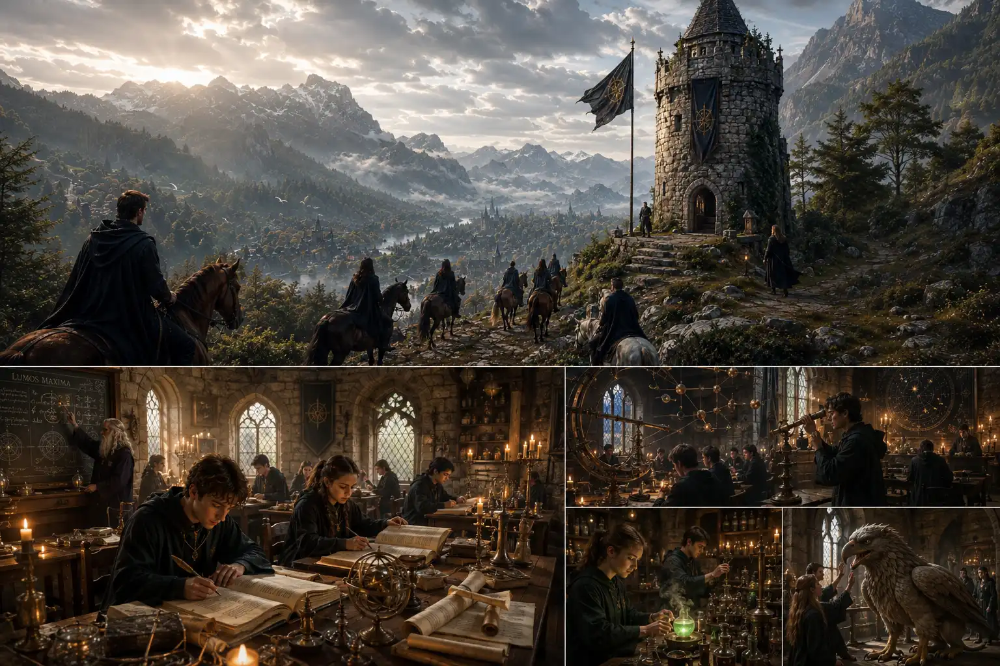
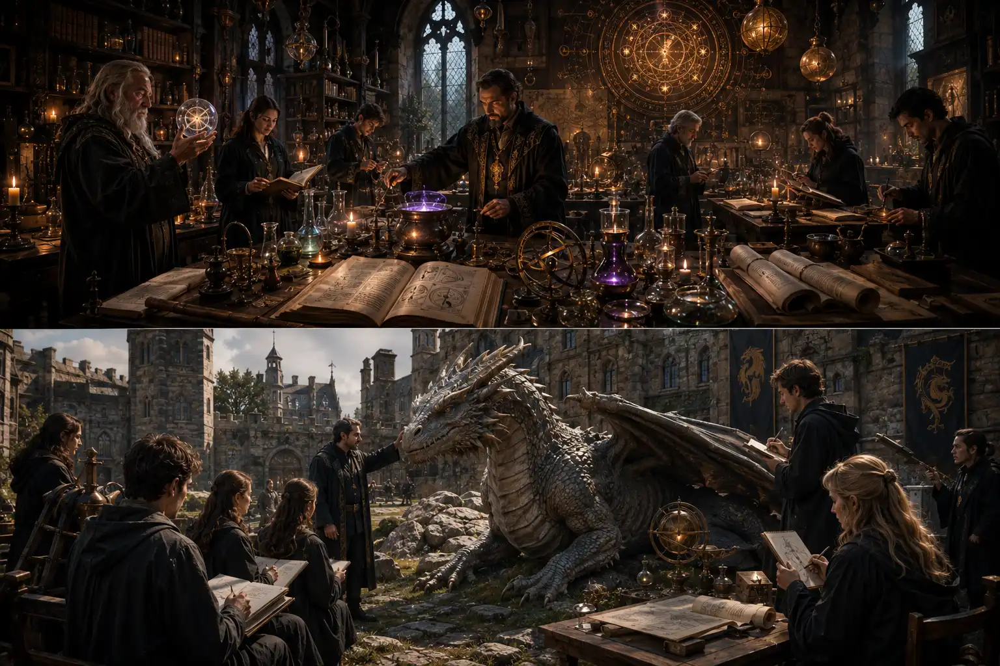
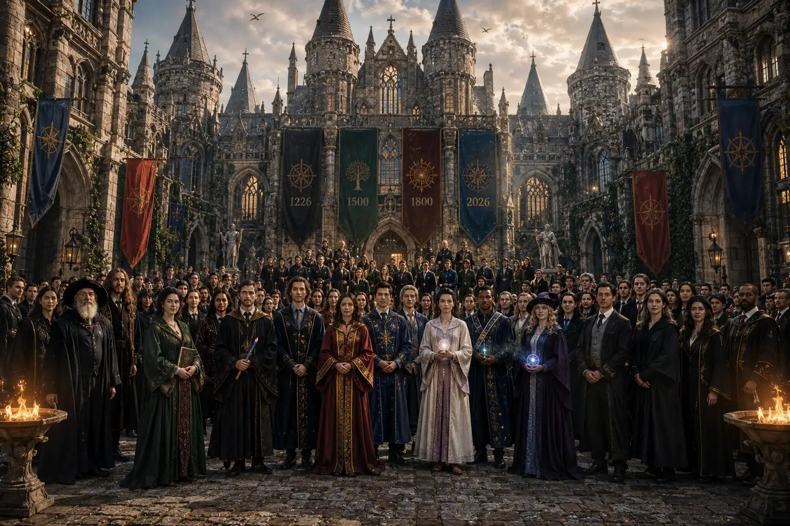
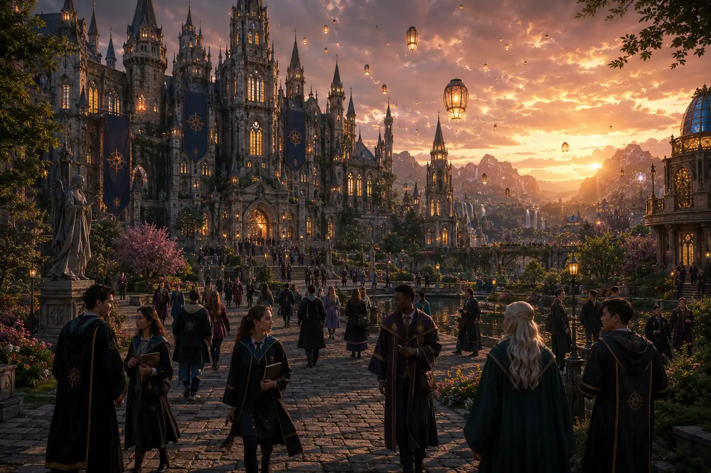

Founded in 1226
Wizard University of Arcania is one of the oldest and most respected institutions of magical learning in the known world. For over 800 years, it has stood as a center of wisdom, discovery, and arcane excellence.
According to ancient records, the University was founded in 1226 by four legendary Archmages who sought to create a place where magical knowledge could be preserved and passed on to future generations. At a time when magic was scattered across kingdoms and hidden within secret orders, the founders envisioned a great university where students from every corner of the realm could study, learn, and thrive.

The Early Years
The earliest classes were held within a small stone tower overlooking the enchanted Starfall Valley. Students gathered to study spellcraft, alchemy, astronomy, and the care of magical creatures. As the University's reputation grew, scholars, wizards, and explorers traveled great distances to learn from its masters.
By the end of the 13th century, the University had expanded beyond its original tower, with the construction of the Grand Library, the Hall of Enchantments, and the first student residences.

Growth and Discovery
Throughout the centuries, Wizard University became renowned for its contributions to magical research and education. Many of the world's most influential spells, potions, and magical inventions were developed within its halls.
The University played a significant role during the Age of Dragons, when its scholars established the first formal studies of dragon behavior and communication. During the Era of Celestial Exploration, University astronomers charted the movements of enchanted stars and discovered new magical constellations.

A Tradition of Excellence
Generations of witches, wizards, alchemists, healers, and magical innovators have studied at Wizard University. Its graduates have gone on to serve as royal advisors, renowned researchers, guardians of ancient knowledge, and pioneers of magical discovery.
Today, the University continues its mission of advancing magical learning while honoring the traditions established by its founders more than eight centuries ago.

The Present Day
More than 800 years after its founding, Wizard University of Arcania remains a global center for magical education and research. Its ancient towers, enchanted libraries, and vibrant student community continue to inspire new generations of students who seek knowledge, adventure, and mastery of the magical arts.